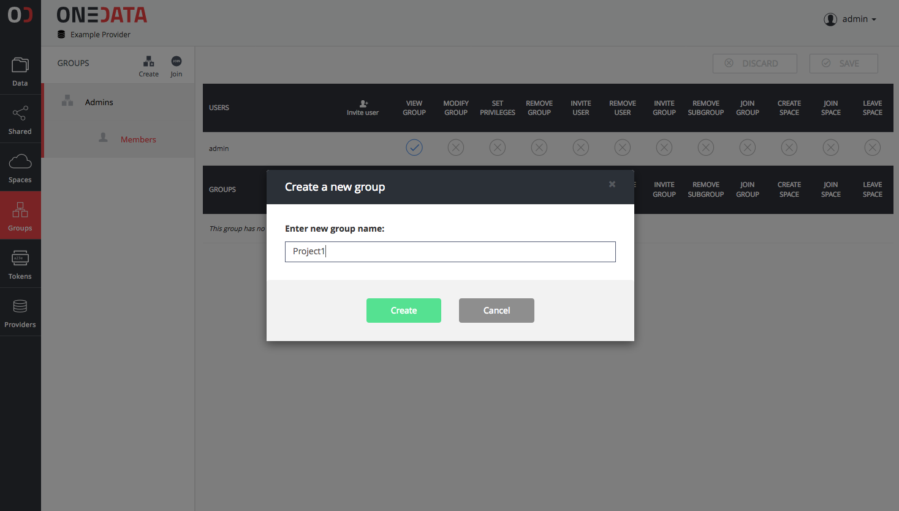
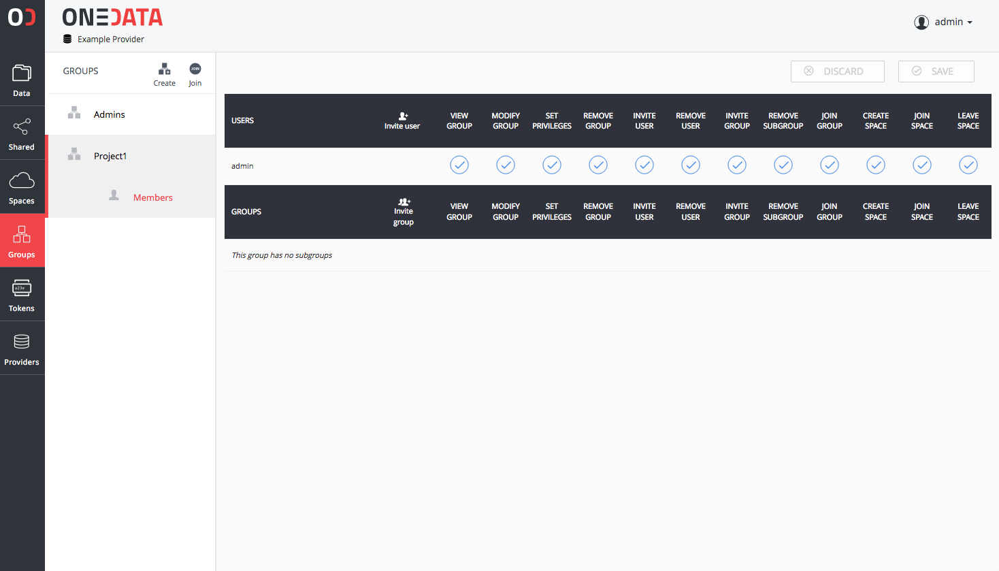
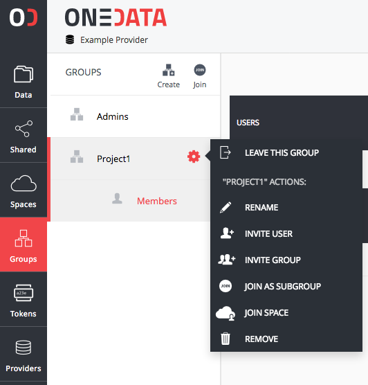

Group Management
You can create or join existing groups to easily manage and collaborate using your data. A group is an abstract entity with a name and at least one user assigned to it, who has sufficient permissions to manage it. You can manage your groups from a Manage groups page, accessible using Group button on the top menu.
Creating a new group
In order to create a new group:
- In the Onedata Web Interface click Groups button located on the left menubar.
- On the Groups page, click Create.
- Enter the name of the new group and click the Create button.

New group will appear on the list of groups designated with a unique ID.
Inviting another user to your group
To invite another user to join your group:
- Navigate to Groups page.
- On your group, click the Settings button.
- Pick Invite User from the drop down menu.
- Copy the token and send it to the user you wish to invite to your group.
After another user joins your group you will be able to see him in the detailed group view.
Joining an existing group
In order to join a group, you must request from them a token. After receiving the token:
- Navigate to the Groups page and click Join.
- Paste the token and click the Join button.
You should be able to see a group on the Manage groups page immediately.
Group properties
On the Groups page, you can see a detailed information about a group by clicking on it.
All information regarding your group is presented here, including:
- a list of members of this group and their permissions
- a list of spaces that this group has joined
Group permissions
You can control actions and the level of access to your group by setting dedicated permissions. In order to edit permissions:
- Navigate to Groups page.
- Click on your group to show detailed view.
- To set a permission click on an empty box in the relevant column.
- To unset a permission click on a box with a tick.
- To save or discard changes use the buttons Save or Discard.

A complete list of available permissions:
| Permission Name | Description |
|---|---|
| View Group | User can see files and directories in your group |
| Modify Group | User can modify files and directories in your group |
| Set privileges | User can modify group privileges |
| Remove Group | User can delete your group |
| Invite user | User can invite new users to your group |
| Remove user | User can remove users from your group |
| Invite group | User can invite new groups to your group |
| Remove subgroup | User can remove subgroups from your group |
| Join group | User can join the group as a subgroup of another group |
| Create space | User can create spaces on behalf of the group |
| Join space | User can join a space on behalf of the group |
| Leave space | User can leave a space on behalf of a group |
| Get support | User can request storage support for spaces on behalf of the group |
Perform actions on your group
On the Groups page, each listed group has a Settings menu.

It allows you to:
| Action Name | Description |
|---|---|
| Leave this group | Remove this group from the list of your groups |
| Rename | Rename this group |
| Invite user | Generate a user invitation token |
| Invite group | Generate a subgroup invitation token |
| Join as subgroup | Join another group |
| Join space | Join existing space |
| Request space creation | Create a space for this group |
| Remove | Remove this group and leave all spaces it has joined |
Removing your group
In order to remove your group:
- Navigate to Groups page.
- On your group, click the Settings button.
- Pick Remove from the drop down menu.
- Click Yes, confirming that you want to remove this group.